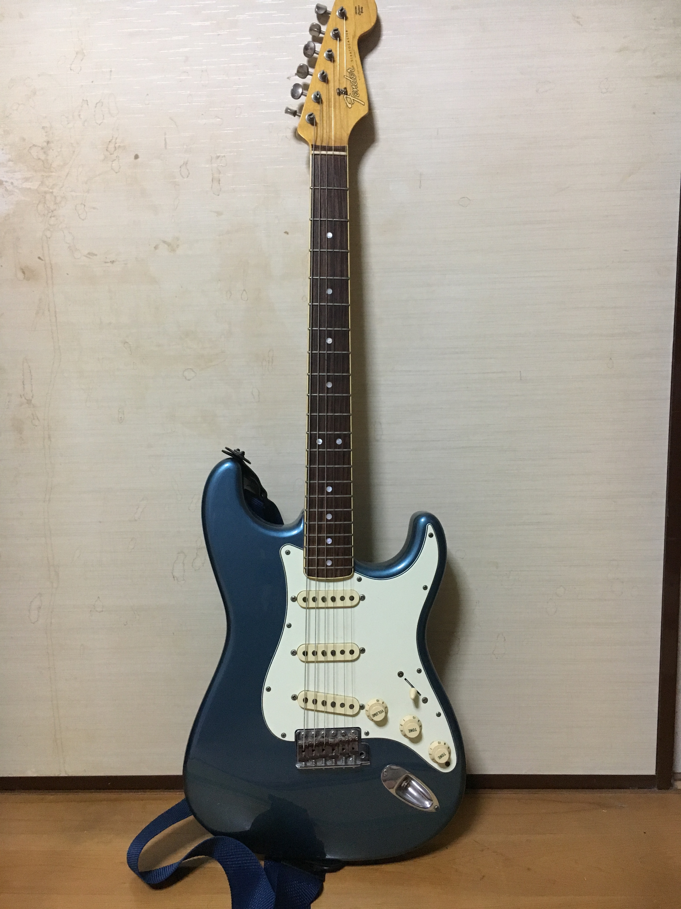
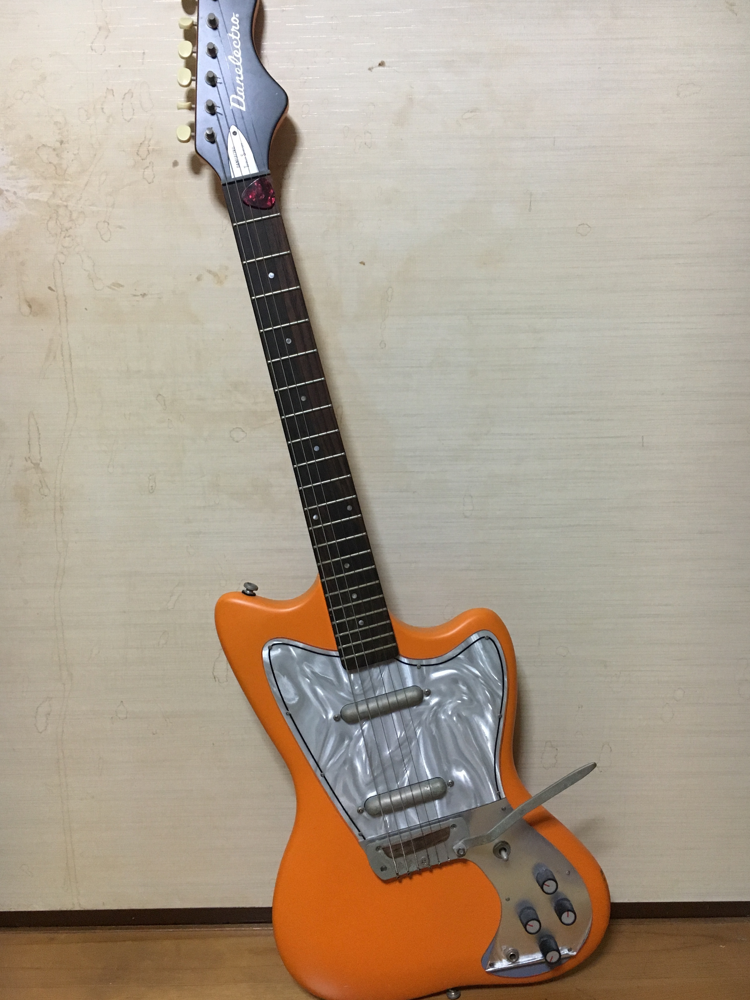
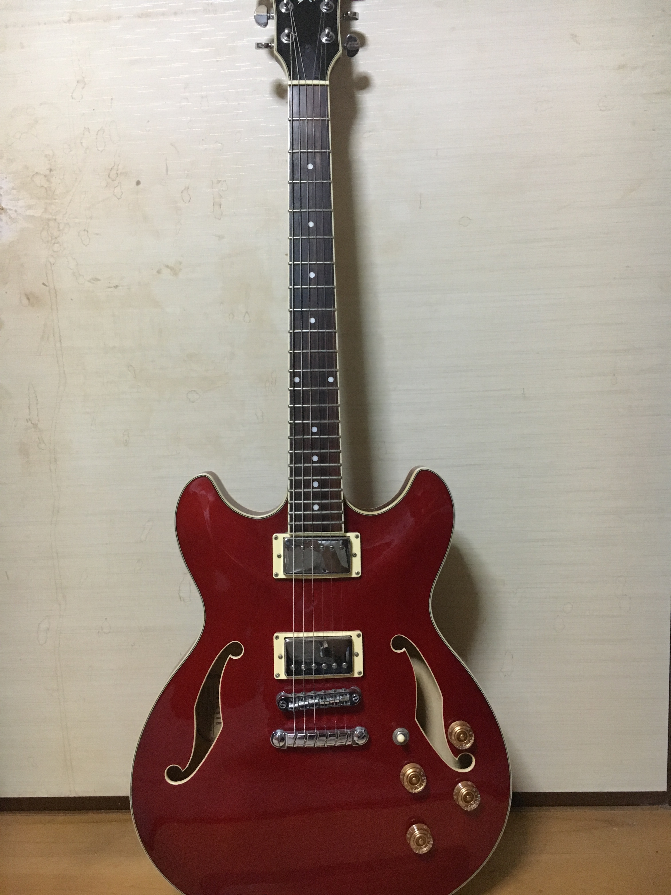

Fender Japan Stratocaster

中学1年生の冬に入手。
初めて入手したギターにして所持しているギターの中で
唯一名の知られたギターである。
有名なだけあって巷でよく聴くギターの音を出すことができるが、
入手以降メンテナンスをしていないのでノイズが乗ってしまう。
the pillowsの真鍋吉明氏が一時期使っていたストラトと色が同じなのが嬉しいところ。
CLOSE
Danelector Dead on 67

Galileo Galileiのボーカルがこのギターを使用しており
それまで見たことないギターであることや安価だった為19の時購入。
ほぼ出回っておらずネットでは黄緑色しか在庫がなくそれを購入したが、
「残っているのが黄緑じゃなくてオレンジでした」とのことでこれになる。
安物感漂うが、なんとも言えない独特の音ではある。
ストラトよりこっちの方がハマることもしばしば。
CLOSE
Ibanez AS73D-TRD

セミアコが欲しくなり24の冬に購入。
所持している中で一番最近に購入したのもあり
ついついこのギターを弾いてしまう。
他のギターと比べると太く甘い音が出るので
リードパートはこれ使っとけばいいでしょ！という気分になるが
歪みであまりいい音を出せない。なんとかしたい。
CLOSE